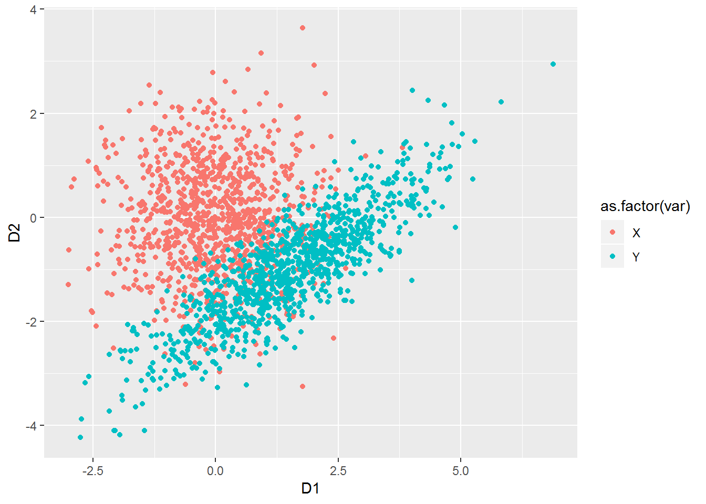
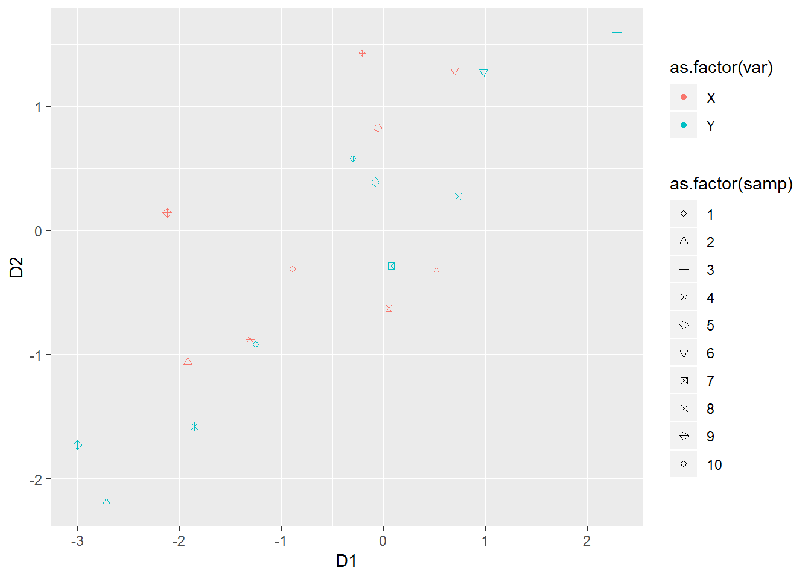

Chapter 8 Multivariate random variables
This chapter deals with multivariate random variables.
The students are expected to acquire the following knowledge:
Theoretical
- Multivariate normal distribution.
R
- Sampling from the multivariate normal distribution.
8.1 Multivariate normal random variables
Exercise 8.1 (Cholesky decomposition) Let \(X\) be a random vector of length \(k\) with \(X_i \sim \text{N}(0, 1)\) and \(LL^*\) the Cholesky decomposition of a Hermitian positive-definite matrix \(A\). Let \(\mu\) be a vector of length \(k\).
Find the distribution of the random vector \(Y = \mu + L X\).
Find the Cholesky decomposition of \(A = \begin{bmatrix} 2 & 1.2 \\ 1.2 & 1 \end{bmatrix}\).
R: Use the results from a) and b) to sample from the MVN distribution \(\text{N}(\mu, A)\), where \(\mu = [1.5, -1]^T\). Plot a scatterplot and compare it to direct samples from the multivariate normal distribution (rmvnorm).
R: \(L\) is a linear map$. Plot 10 points from \(X\) and 10 points from the transformation \(L X\) (Hint: use color or shapes). Compare and discuss the results.
Solution.
\(X\) has an independent normal distribution of dimension \(k\). Then \[\begin{align} Y = \mu + L X &\sim \text{N}(\mu, LL^T) \\ &\sim \text{N}(\mu, A). \end{align}\]
\[\begin{align} \begin{bmatrix} a & 0 \\ b & c \end{bmatrix} \begin{bmatrix} a & b \\ 0 & c \end{bmatrix} = \begin{bmatrix} 2 & 1.2 \\ 1.2 & 1 \end{bmatrix} \end{align}\]
# a
set.seed(1)
nsamps <- 1000
X <- matrix(data = rnorm(nsamps * 2), ncol = 2)
mu <- c(1.5, -1)
L <- matrix(data = c(sqrt(2), 0,
1.2 / sqrt(2), sqrt(1 - 1.2^2/2)),
ncol = 2,
byrow = TRUE)
Y <- t(mu + L %*% t(X))
plot_df <- data.frame(rbind(X, Y), c(rep("X", nsamps), rep("Y", nsamps)))
colnames(plot_df) <- c("D1", "D2", "var")
ggplot(data = plot_df, aes(x = D1, y = D2, colour = as.factor(var))) +
geom_point()
# b
nsamps <- 10
X <- matrix(data = rnorm(nsamps * 2), ncol = 2)
L <- matrix(data = c(sqrt(2), 0,
1.2 / sqrt(2), sqrt(1 - 1.2^2/2)),
ncol = 2,
byrow = TRUE)
Y <- t(L %*% t(X))
plot_df <- data.frame(rbind(X, Y),
c(rep("X", nsamps), rep("Y", nsamps)),
c(1:nsamps, 1:nsamps))
colnames(plot_df) <- c("D1", "D2", "var", "samp")
ggplot(data = plot_df, aes(x = D1,
y = D2,
color = as.factor(var),
shape = as.factor(samp))) +
geom_point() +
scale_shape_manual(values=1:10)
Exercise 8.2 (Eigendecomposition)
Solution.
1
# a
set.seed(1)
sigma <- matrix(data = c(1.2, -0.8,
-0.8, 1.6),
nrow = 2,
byrow = TRUE)
ed <- eigen(sigma)
eval <- ed$values
evec <- ed$vectors